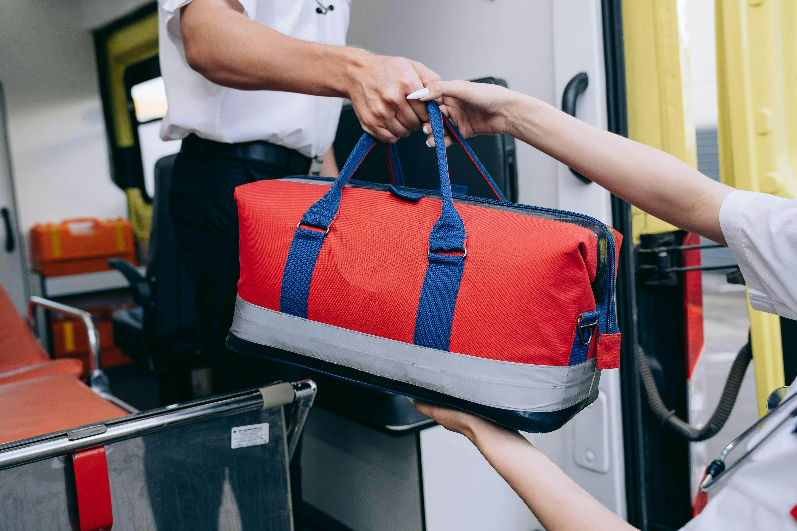

Missions Accomplished





-
🏆 Successful Launch of Community Food Distribution Program
- Resourcify facilitated the creation and management of a Community Food Distribution Program, ensuring that surplus food from local farms, stores, and households was efficiently collected, sorted, and delivered to families in need.
- Over 500 food boxes distributed in the first month.
- Reduced food waste by 30% through smart inventory management.
- Impacted 200+ households across multiple communities.
-
🏆 Implementation of a Real-Time Resource Tracking System for Food Aid
- Resourcify developed and implemented a real-time tracking system that monitored food inventory, donations, and deliveries.
- Enabled live updates on stock levels and delivery routes.
- Increased efficiency by 40% in food parcel preparation.
- Reduced delays in distribution, ensuring fresh produce reached recipients on time.
-
🏆 Medical Equipment Sharing & Donations
- Facilitate the donation and sharing of essential medical equipment (e.g., stethoscopes, wheelchairs, BP monitors) between clinics, hospitals, or local health centers.
- Connect donors to healthcare providers in need through the platform.
-
🏆 Patient Resource Allocation
- Manage and allocate medical resources such as beds, appointments, lab equipment time slots, or specialist consultations in clinics/hospitals.
- Patients can book consultations or request medical support resources via Resourcify.
-
🏆 Partnered with Local Farmers for Fresh Produce Supply
- Resourcify partnered with 15+ local farmers to source fresh fruits and vegetables, reducing food scarcity in underserved areas and promoting local agriculture.
-
🏆 Introduced a Volunteer Management System
- Launched an integrated Volunteer Management System, onboarding and coordinating 100+ active volunteers for food collection, sorting, and distribution.
-
🏆 Reduced Food Waste by Implementing Expiry Tracking
- By leveraging Resourcify’s expiry date tracking feature, we minimized food spoilage, reducing waste by 25% over three months.
-
🏆 Expanded Resource Distribution to Include Hygiene Kits
- In addition to food, Resourcify successfully organized the distribution of hygiene kits, benefiting 300+ families with essentials like soap, sanitizer, and sanitary products.
-
🏆 Launched a Community Garden Initiative
- Established community gardens in partnership with local schools, providing fresh produce to supplement food distribution programs and educate children on sustainable agriculture.
-
🏆 Facilitated Donations from Corporate Partners
- Partnered with 10+ corporate sponsors, leading to regular donations of non-perishable goods, bottled water, and financial support worth over $50,000 annually.
-
🏆 Established a Sustainable Packaging Initiative
- Introduced eco-friendly packaging for food distribution boxes, reducing plastic waste by 40% and promoting sustainable practices within the community.
-
🏆 Created Educational Workshops on Nutrition and Sustainability
- Organized monthly workshops educating 500+ community members on nutrition, healthy eating habits, and sustainable living using Resourcify’s platform for registration and tracking.
-
🏆 Integrated Google Maps for Efficient Delivery Routes
- Implemented Google Maps API within Resourcify to plan optimized delivery routes, reducing delivery time by 30% and increasing coverage to remote areas.